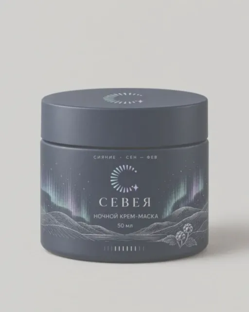
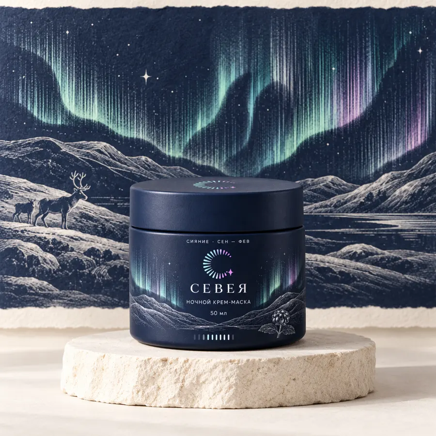

поменяйте продукт:
Рецепт этой картинки
Поменяйте продукт: пресет и правила бренда останутся прежними.
У каждой картинки
есть рецепт
Соберите рецепт один раз и получайте материалы в одном стиле.
Нода — один шаг: что снимаем, в каком стиле, по правилам бренда.
Соедините ноды сами
Протяните провод от кружка
одной ноды к кружку другой.
- 01Продукт → Пресет
- 02Пресет → Бренд-директор
- 03Бренд-директор → Результат
начните с продукта

фото_крема.jpgСеверное сияние · 4:5 · 4K
цвета, композиция, стиль

Каждая нода отвечает за своё
Выключите любую ноду и посмотрите, что пропадёт из готовой картинки.
Нажмите на ноду, чтобы прочитать, за что она отвечает и что будет без неё.
Банка на камне, за ней северное сияние и горы гравюрой
Северное сияние · 4:5 · 4K
цвета, композиция, стиль
форма, крышка, этикетка как на фото
новая нодаПоменяйте одну ноду
Выберите в ноде другой пресет.
Банка та же, а настроение новое.
Банка на камне в центре кадра
Запустите рецепт
Выберите продукт или загрузите своё фото.
Рецепт соберёт сторис, карточку и баннер.
- промптв очереди
- пресетв очереди
- бренд-директорв очереди
- сверка товарав очереди
- форматы ×3в очереди